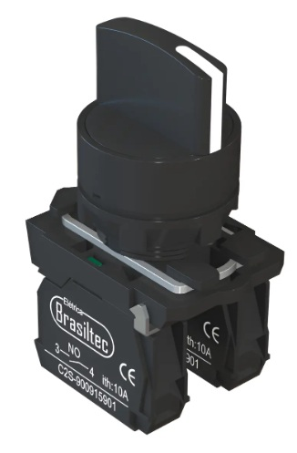

Conceitos e Aplicações
Contator
O contator é um dispositivo eletromecânico que funciona como uma chave controlada eletricamente. Sua função básica é abrir ou fechar um circuito de alta potência a partir de um sinal de baixa potência.
Diferente de um interruptor manual, o contator utiliza o eletromagnetismo para realizar o movimento físico de fechamento dos contatos. Isso permite que o acionamento seja feito à distância ou por meio de sistemas automáticos (sensores, temporizadores ou computadores industriais).
Como ele funciona?
O funcionamento de um contator pode ser resumido em três etapas:
Alimentação da Bobina: Quando a bobina interna recebe tensão, ela se torna um eletroímã.
Atração do Núcleo: Esse eletroímã puxa um núcleo de ferro móvel. Como os contatos elétricos estão presos a esse núcleo, eles se movem junto.
Comutação: Os contatos se fecham (ou se abrem, dependendo do modelo), permitindo que a energia flua para a carga (como um motor ou um conjunto de resistências).
Aplicações: Onde eles são essenciais?
O contator é a peça central de qualquer painel de automação. Suas principais aplicações são:
Comando de Motores Trifásicos: É a aplicação mais comum. O contator suporta a alta corrente de partida dos motores sem que os contatos se soldem.
Automação de Iluminação: Utilizado para ligar grandes grupos de refletores em estádios, galpões ou shoppings, onde um interruptor comum não suportaria a carga.
Sistemas de Aquecimento: Controle de resistências elétricas em caldeiras e fornos industriais que operam por longos períodos.
Chaves de Transferência: Usado para alternar automaticamente a alimentação de um prédio entre a rede elétrica da concessionária e um gerador quando falta energia.

Botão de Pulso (Botoeira)
Dispositivo de comando manual eletromecânico. Possui internamente blocos de contatos que podem ser NA (Normalmente Aberto) ou NF (Normalmente Fechado). Ao ser pressionado, o contato NA fecha (conduz corrente) e o NF abre (interrompe corrente). Ao soltar, uma mola mecânica força o retorno imediato ao estado inicial.
Aplicações Domésticas:
Campainhas residenciais: Onde o som só toca enquanto o botão está pressionado.
Botões de liquidificadores/processadores (função Pulsar): Para triturar gelo ou alimentos rapidamente.
Interfones de prédios: Para acionar a abertura da fechadura elétrica do portão.
Aplicações Industriais:
Partida de motores elétricos: Acionando contatores através de um circuito de autorretenção (selo).
Reset de falhas: Botões azuis dedicados a limpar alarmes e reiniciar sistemas após uma parada
Comandos bi-manuais: Duas botoeiras distantes que exigem que o operador use as duas mãos simultaneamente para acionar uma prensa, protegendo seus braços.

Chave / Retenção (Manopla)
Também chamada de chave seletora ou comutadora. Diferente da botoeira, ela possui uma trava mecânica (retenção). Pode ter múltiplas posições físicas (ex: 2, 3 ou mais posições) e múltiplos blocos de contatos independentes, permitindo direcionar a corrente elétrica para circuitos completamente diferentes dependendo da posição girada.
Aplicações Domésticas:
Chave seletora do chuveiro elétrico: Para mudar manualmente entre as posições "Inverno / Verão / Desligado".
Botão seletor da máquina de lavar roupas: Onde você gira a manopla para escolher o ciclo de lavagem (Pesado, Delicado, Enxágue).
Chaves seletoras de voltagem (110V/220V): Atrás de fontes de computadores antigos ou estabilizadores.
Aplicações Industriais:
Seleção de Modo (Manual / Automático): Permite que o operador teste um motor manualmente ou entregue o controle total ao computador da fábrica.
Chaves de Transferência de Carga: Usadas para mudar a alimentação da fábrica da rede elétrica da concessionária para um gerador a diesel durante um apagão.

Relé Temporizador
Componente de comando que introduz atrasos intencionais em circuitos elétricos. Baseia-se em circuitos osciladores eletrônicos internos de alta precisão. Os principais modos são: RE (Retardo na Energização), onde o relé conta o tempo após receber energia para só então fechar o contato, e RD (Retardo na Desenergização), onde ele abre o contato apenas após o tempo programado terminar depois que o sinal de comando sumiu.
Aplicações Domésticas:
Minuterias de prédio: Aquele sistema em que você aperta o botão no corredor do edifício, a luz acende e apaga sozinha após 1 ou 2 minutos.
Temporizadores de irrigação de jardim: Dispositivos de tomada que ligam a bomba d'água por 15 minutos todos os dias em horários programados.
Sistemas de Ar-condicionado: Evitam que o compressor ligue imediatamente após uma queda rápida de energia, esperando 3 minutos para a pressão do gás estabilizar antes de dar partida novamente.
Aplicações Industriais:
Partida Estrela-Triângulo: Controla os segundos exatos em que o motor gira no modo Estrela (corrente menor) antes de chavear para o modo Triângulo (potência total).
o Sistemas de Ventilação Pós-Desligamento: Mantém os exaustores de um forno industrial ligados por 10 minutos após o fogo ser apagado, garantindo o resfriamento seguro do equipamento.

By Kristopher ™